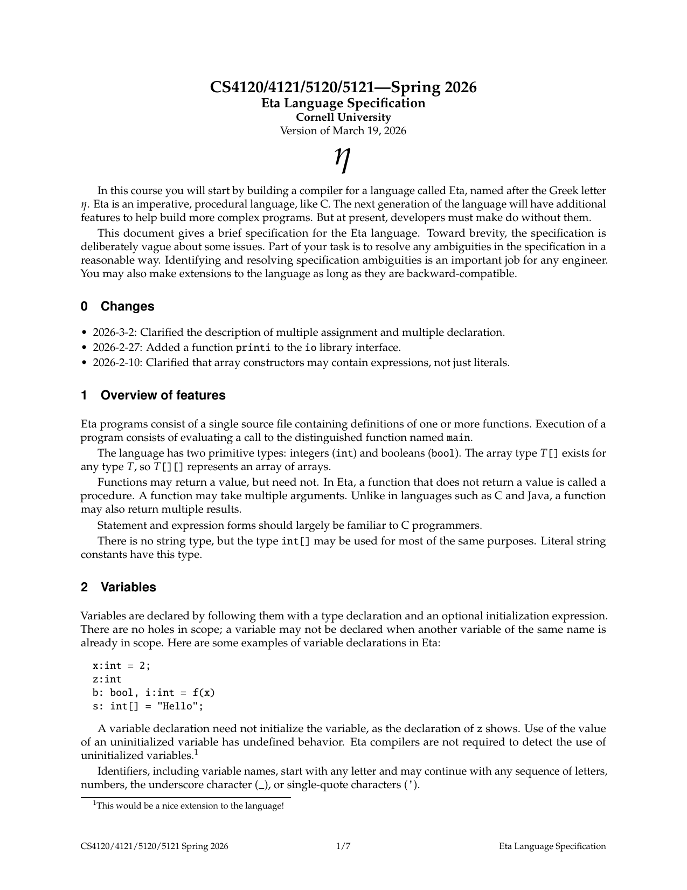

Writing a Compiler in C++
A from-scratch compiler in C++ for Eta, a small C-like statically typed language.
Source code: github.com/gracejinsotrue/eta-compiler
What does a compiler actually have to do?
A compiler takes a text file that a person wrote and produces machine instructions that a processor can execute. In general between the two is large, as source code has names, nesting, types, infinte variables etc. A processor has bytes, address space, 14 (give or take) usable registers. A compiler closes the gap between the two in a sequence of small steps, where each step solves one particular problem
That sequence is the pipeline written below where each stage takes one representation of the program and produces another one that is slightly closer to the machine.
The language being compiled
Eta is a small statically typed language with C-like syntax such as int and
bool,
arbitrarily nested arrays, functions that can return more than one value,
if and while, and a module system built on separate interface files. The
full language specification is below and what they gave us to work with when implementing compiler for
this language.

01 · Lexical analysis
A source file arrives as a stream of characters. The lexer scans this left to right and
groups characters into
tokens such as the identifier factorial, the keyword while, the
two-character
operator <=, the number 42, etc., and whitespace and comments are
thrown
away.
Everything after this point works on tokens from the lexer.
Eta has two kinds of file, one set of rules
Eta has implementation files, which contain function bodies, and interface files, which only declare signatures for other files to import. They need different grammars, but building two entire parsers to handle a difference that small would be wasteful. Instead the lexer emits a single invented token at the very start of the file, which says which kind of file this is, and the grammar branches once on that first token and then proceeds. This is a small trick that saves duplicating a few hundred lines.
Literals get a state machine instead of some big regex
You could theoretically match a string literal with a single regular expression, but a problem is what happens when the match fails; you'd get one generic error for every possible mistake. Therefore character and string literals are are scanned by a small state machine with its own modes instead.
Counting columns correctly
Every error message carries a line and column, and those get compared character for character against a reference implementation. Two cases are easy to get wrong: A tab does not advance one column, it advances to the next tab stop 2. a multi-byte UTF-8 character is several bytes but only one column, so the continuation bytes of a character have to be skipped when counting.
for each byte in the matched text:
if byte is '\n': line++, column = 1
elif byte is '\t': column = next multiple of 4, plus 1
elif byte is not a UTF-8 continuation byte:
column++ // continuation bytes belong to a character already counted